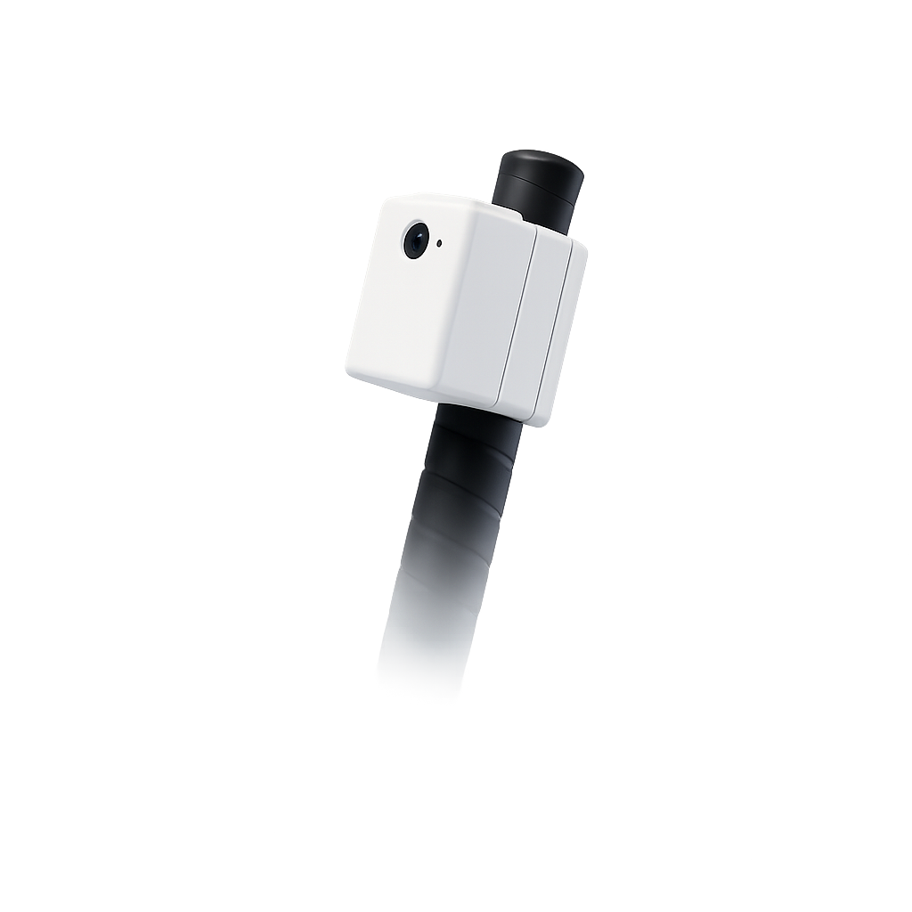
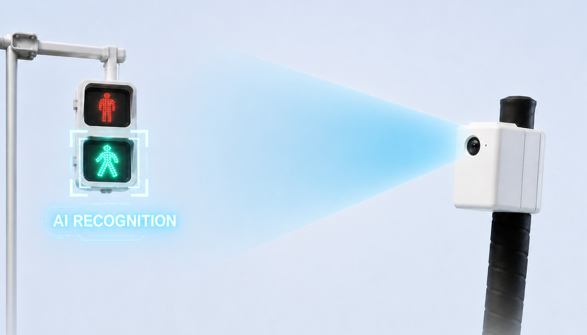
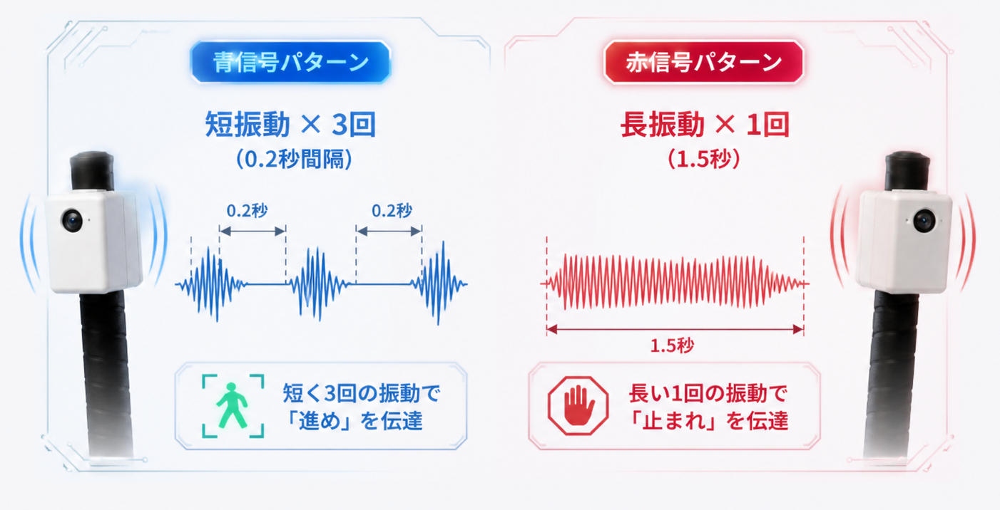
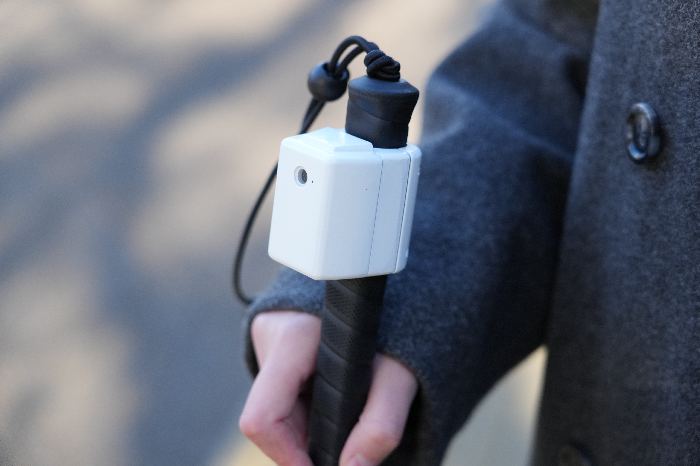
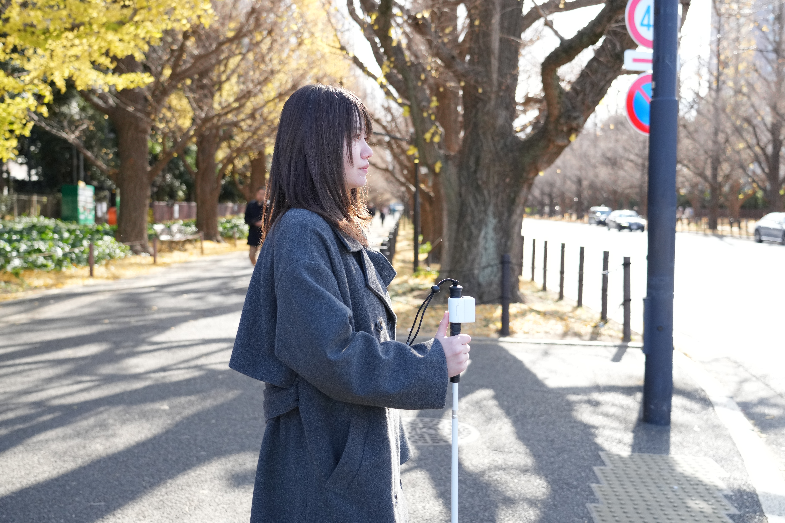
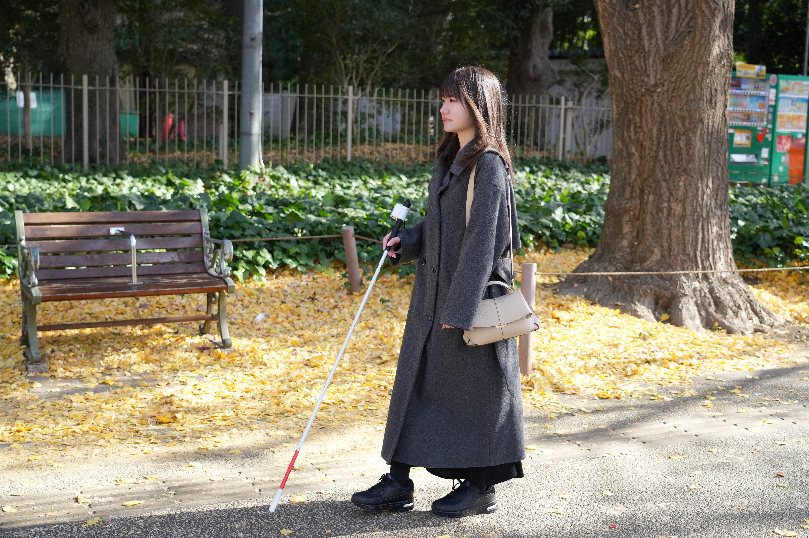

AISIGは、AIカメラが歩行者用信号機の赤・青をリアルタイムで判定し、
振動パターンで視覚障害者に伝える、まったく新しい歩行支援デバイスです。

カメラで見て、AIで判断し、振動で伝える。
内蔵カメラが歩行者用信号機を捉え、独自の画像認識AIが赤・青を0.1秒以内に判定。夜間・逆光・悪天候など、あらゆる環境に対応します。

青信号は短い振動を連続で、赤信号は長い振動で通知。直感的に判別できる振動パターンで、視覚に頼らず信号の色を把握できます。

AISIGの画像認識AIは、信号機を捉えた瞬間に色を判定。振動フィードバックまでのタイムラグはわずか0.5秒。安全な横断をリアルタイムでサポートします。
スペックを見る信頼性と携帯性を両立した、現場で使えるスペック。
| AI・カメラ | |
|---|---|
| 画像認識エンジン | AISIG Vision AI v2（オンデバイス処理） |
| カメラ | 広角 120° / F2.0 / 自動露出補正 |
| 判定速度 | 0.5秒以内（信号検出〜振動出力） |
| 判定精度 | 85%（現在開発中） |
| 対応環境 | 昼間・夜間・逆光・雨天・霧 |
| 振動フィードバック | |
| 青信号パターン | 短振動 × 3回（0.2秒間隔） |
| 赤信号パターン | 長振動 × 1回（1.5秒） |
| 振動強度 | 3段階調整可能 |
| バッテリー・充電 | |
| バッテリー容量 | 400 mAh |
| 連続使用時間 | 最大 3時間 |
| 充電方式 | USB-C |
| 本体 | |
| サイズ | 95 × 45 × 18 mm |
| 重量 | 85 g |
| 素材 | ABS + アルミニウムフレーム |
| 防水・防塵 | IP65 |
手のひらに収まるコンパクトなボディに、信号判定AIを搭載。



視覚障害者支援・AIテクノロジー分野で国内外から高い評価を受けています。
ハードウェアコンテスト「GUGEN2022」にてグランプリを受賞。あわせてHAXTokyo賞・Windgraphy賞も獲得。
世界的なデザインエンジニアリングコンテスト「The James Dyson Award 2023」にて国内最優秀賞を受賞、国際TOP20にも選出。
品川ビジネス創造コンテスト2022にて第一三共賞および奨励賞を受賞。社会課題解決への取り組みが高く評価された。
視覚障害者支援AIデバイスとして、国内外の主要メディアに取り上げられています。
視覚障害者の横断歩道問題をAIで解決するAISIGが、テレビ朝日の未来を創る若者を特集する番組に取り上げられた。
理系女子・エンジニアに向けたメディア「リケジョ RIN」にて、AISIGの開発ストーリーと社会的意義が紹介された。
大学発スタートアップとして注目を集めるAISIGチームの取り組みが、学生向けメディアで特集された。
デモ映像・開発ストーリー・実際の使用シーンをご覧ください。
現在CAMPFIREにてクラウドファンディングを実施中です。支援いただいた資金をもとに開発を進め、2027年度に製品をお届けする予定です。正式販売後は公式サイトでもご案内します。
はい、それがAISIGの最大の特長です。全国の信号機のうち音響信号機は約10%程度しか設置されていません。AISIGはどの横断歩道でも信号の色を判定できます。
不要です。すべての画像認識・判定処理はデバイス内で完結するため、通信環境がない場所でも安定して動作します。
電源を入れてカメラを信号機に向けるだけです。加速度センサで白杖の状態を判定し、横断歩道につくと自動的に画像認識を開始します。
試作・改良費、AI認識精度の向上、安全性・品質検証、量産に向けた準備に使用します。「試作品」から「実際に使える製品」へ進めるための資金です。